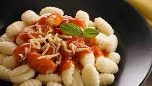

Inicio
Acerca de mi
Contacto
Ñoquis caseros

Ingredientes
1 kilo de papas
2 cucharadas de sal gruesa
1 huevo
1 yema
Cantidad a gusto de sal, pimienta y nuez moscada
1 cucharada de polvo para hornear
350 g de harina y extra
1 chorrito de aceite